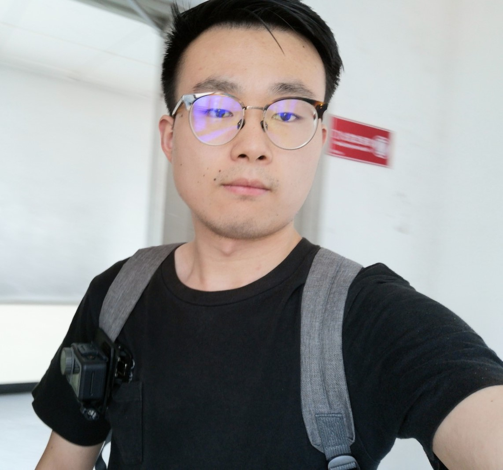

Xiaohan Chen陈霄汉M.Phil Student
School of Information Science and Technology, |
 |
I am currently a third year (2017-2020) M.Phil student in the School of Information Science and Technology, Beijing University of Chemical Technology (BUCT), supervised by Dr. Beike Zhang. Before that, I received B. Eng. degree in School of Mechanical and Electrical Engineering from the Northeast Forestry University (NEFU) in 2017.
Research interests: Deep Learning, Fault Diagnosis and Evolutional Algorithms.
[May 2020] One paper accepted by Journal of Intelligent Manufacturing
[May 2019] One paper accepted by ICMA 2019
[May 2019] One paper accepted by ICMA 2019
Bearing fault diagnosis base on multi-scale CNN and LSTM model
Xiaohan Chen, Beike Zhang, Dong Gao.
Journal of Intelligent Manufacturing, 2020
Algorithm Based on Improved Genetic Algorithm for Job Shop Scheduling Problem
Xiaohan Chen, Beike Zhang, Dong Gao.
2019 IEEE International Conference on Mechatronics and Automation (ICMA 2019), Tianjing, China.
An Improved Bat Algorithm for Job Shop Scheduling Problem
Xiaohan Chen, Beike Zhang, Dong Gao.
2019 IEEE International Conference on Mechatronics and Automation (ICMA 2019), Tianjing, China.
一种自动学习特征表达的滚动轴承在线故障诊断方法
陈霄汉, 高东, 张贝克. 2020. No.: CN2019113043027
Outstanding Student of Baidu Deep Learning Engineer Training Camp, 2020
National Student Scholarship, 2019,2018,2017
Outstanding Volunteer of The University of Miskolc Confucius Institute Summber Camp, 2019
Outstanding Student of BUCT, 2019
Outstanding Volunteer of Belt and Road Principal Forum, 2017
Conference Reviews
CCC 2019
Conference Presentations
ICMA 2019, Tianjing, China